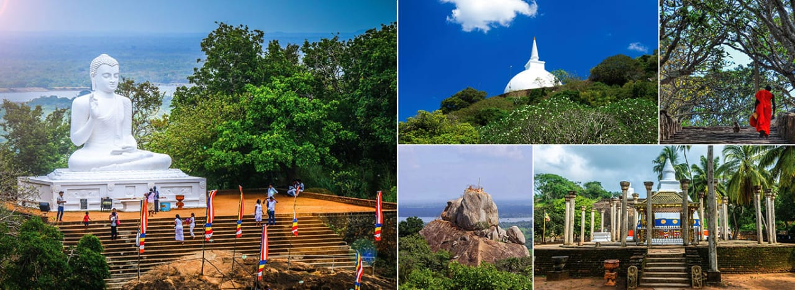

Mihintale is a mountain peak near Anuradhapura in Sri Lanka. It is believed by Sri Lankans to be the site of a meeting between the Buddhist monk Mahinda and King Devanampiyatissa which inaugurated the presence of Buddhism in Sri Lanka. It is now a pilgrimage site, and the site of several religious monuments and abandoned structures.
Approximately 12.5 km (7.8 mi) east of Anuradhapura, close to the Anuradhapura - Trincomalee Road is situated the "Missaka Pabbata" which is 1,000 feet (300 m) in height and is one of the peaks of a mountainous range.
From ancient times, large steps were constructed to climb Mihintale. It is stated that King Devanampiyatissa constructed a vihara and 68 caves for the bhikkhus to reside in. At Mihintale there gradually grew a number of Buddhist monasteries or viharas with all the dependent buildings characteristic of the monasteries of that period.
There are lots of Sacred places in Mihintale;
Kaludiya Pokuna
Rajagiri Gala
Ata Seta Len
Sinha Pokuna
Mihindu Guhawa
Aradhana Gala
Naga Pokuna
Eth Wehera
Katu seya
contact us :011#######
contact us :.......@gmail.com
